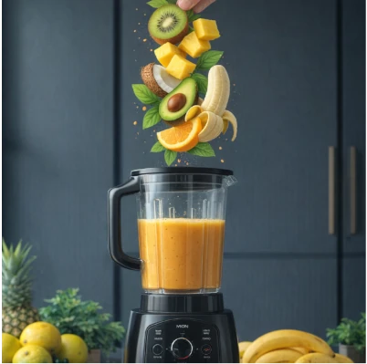

🎯 Pourquoi cette fusion créole-adaptogène ?
Imaginez : un smoothie qui vous transporte aux Antilles tout en aidant votre système nerveux à retrouver son équilibre. C'est exactement ce que propose cette collection.
Le concept est simple :
- Les fruits tropicaux apportent vitamines, enzymes et plaisir immédiat.
- Les adaptogènes soutiennent la réponse naturelle de l'organisme face au stress.
- Ensemble, ils créent une pause quotidienne que vous aurez envie de prendre.
Ce n'est pas la plante qui fait le travail — c'est la pause que vous vous accordez pour la préparer et la savourer.
La vraie force, elle est déjà en vous. Le smoothie, lui, vous aide à vous en souvenir.
📊 Ce que vous ressentez a un nom — et une recette.
Prenez 30 secondes pour observer ce que vous ressentez aujourd'hui :
| Si vous vivez... |
Essayez cette recette |
| 🧠 Brouillard mental, difficulté à vous concentrer | Focus Antillais |
| 💪 Épuisement physique après l'effort | Énergie Martiniquaise |
| 😰 Nervosité avant une rencontre sociale | Calme Caraïbe |
| 💔 Accumulation d'émotions, irritabilité | Apaisement Guadeloupéen |
| 🤢 Maux d'estomac liés au stress | Estomac Heureux |
| 🔋 Coup de fatigue durable | Renaissance Tropicale |
| 🌙 Nuits difficiles, sommeil léger | Douceur Nuit Créole |
Les 7 recettes détaillées
💡 Note importante sur les dosages : Les quantités indiquées sont des moyennes pour des poudres standards. La concentration des extraits varie selon les marques (ex : extrait 10:1 vs poudre brute). Vérifiez toujours l'étiquette de votre produit et commencez par une demi-dose pour tester votre tolérance.
1️⃣ Focus Antillais — Pour le stress mental
Quand le prendre : Le matin, avant un travail exigeant
Ingrédients :
- 🥥 200 ml de lait de coco (ou lait d'avoine/chanvre pour une version plus légère)
- 🍌 1 banane bien mûre
- ½ mangue
- 🌿 1 c.à.c d'ashwagandha
- 1 cm de gingembre frais
- 🟡 ½ c.à.c de curcuma
- 🌱 1 c.à.s de graines de chia
Le secret : Le gingembre et le curcuma soutiennent la vitalité et la circulation, tandis que l'ashwagandha contribue au bien-être face aux tensions du quotidien. Une combinaison puissante pour la clarté mentale.
2️⃣ Énergie Martiniquaise — Pour la fatigue physique
Quand le prendre : Après le sport ou en cas d'épuisement
Ingrédients :
- 🍊 150 ml de jus d'orange
- 🍍 150 g d'ananas
- ⚡ 1 c.à.c de maca
- 🥜 30 g de noix de cajou
- 🍂 ½ c.à.c de cannelle
- 🍯 1 c.à.s de miel (ou sirop d'agave pour une version vegan)
Le secret : La maca soutient la vitalité et l'énergie au quotidien sans surstimuler le système nerveux. Idéal pour les sportifs et les journées intenses.
3️⃣ Calme Caraïbe — Pour les moments de nervosité
Quand le prendre : 30 minutes avant un événement social
Ingrédients :
- 🥛 200 ml de lait d'amande (ou alternative végétale sans noix)
- 150 g de papaye
- 🌺 1 c.à.c de tulsi (basilic sacré)
- 🥑 ¼ d'avocat
- 🍋 ½ citron vert
- 🌿 Menthe fraîche
Le secret : Le tulsi est une plante adaptogène reconnue pour contribuer à une sensation de calme et d'équilibre, sans endormir — parfait pour rester présent et détendu.
4️⃣ Apaisement Guadeloupéen — Pour la surcharge émotionnelle
Quand le prendre : En fin d'après-midi, pour libérer les tensions
Ingrédients :
- 🥥 200 ml de lait de coco (ou lait de riz)
- 🍈 3-4 fruits de la passion
- 🌸 ½ c.à.c de rhodiola
- 💚 1 c.à.c de spiruline
- 🍫 1 c.à.s de cacao cru
- 🌼 1 gousse de vanille
Le secret : La rhodiola soutient l'organisme dans les périodes de tension. Le cacao ajoute une touche de réconfort et de bien-être.
5️⃣ Estomac Heureux — Pour le stress digestif
Quand le prendre : En milieu de journée, après un repas stressant
Ingrédients :
- 🥥 200 ml d'eau de coco
- 🥝 2 kiwis
- 🌾 ½ c.à.c d'astragale
- 🍍 100 g d'ananas
- 💊 1 capsule de probiotiques (optionnel)
- 🟡 ½ c.à.c de curcuma
Le secret : L'ananas contient de la broméline, une enzyme qui contribue au confort digestif. L'eau de coco réhydrate et apaise l'organisme.
6️⃣ Renaissance Tropicale — Pour les coups de fatigue durables
Quand le prendre : Chaque matin pendant 3 semaines minimum
Ingrédients :
- 🥛 200 ml de lait de coco ou soja (ou lait d'avoine)
- 🍌 1 banane
- 🌿 ½ c.à.c de ginseng
- 🍒 1 c.à.s de baies de goji
- 🥜 20 g d'amandes
- 🍫 1 c.à.s de cacao
Le secret : Le ginseng contribue à la vitalité sur le long terme. C'est un investissement pour votre récupération profonde.
7️⃣ Douceur Nuit Créole — Pour les nuits difficiles
Quand le prendre : 1 heure avant le coucher
Ingrédients :
- 🥥 200 ml de lait de coco chaud (ou lait d'amande chaud)
- 🍐 3 figues séchées
- 🍄 ½ c.à.c de reishi
- 🌰 Pincée de noix de muscade
- 🌿 1 c.à.c de mélisse
- 🍯 1 c.à.s de miel (ou sirop d'érable)
Le secret : Le reishi est un champignon adaptogène qui contribue à la détente et à un sommeil de qualité. Le lait chaud complète l'effet relaxant.
⚡ Guide rapide des adaptogènes
| Plante |
Effet principal |
Moment idéal |
Durée pour résultats |
| Ashwagandha |
Contribue au bien-être face aux tensions du quotidien |
Matin |
2-4 semaines |
| Maca |
Soutient la vitalité et l'énergie au quotidien |
Matin |
2 semaines |
| Tulsi |
Contribue à une sensation de calme et d'équilibre |
Toute la journée |
1-2 semaines |
| Rhodiola |
Soutient l'organisme dans les périodes de tension |
Matin |
2-3 semaines |
| Astragale |
Contribue au confort digestif et au bien-être général |
Matin |
3-4 semaines |
| Ginseng |
Contribue à la vitalité sur le long terme |
Matin |
3-4 semaines |
| Reishi |
Contribue à la détente et à un sommeil de qualité |
Soir |
2-3 semaines |
⚠️ Précautions importantes & conformité
- Commencez doucement : ½ c.à.c au début pour tester votre tolérance, surtout si vous utilisez des extraits concentrés.
- Variez les recettes : Ne restez pas sur une seule formule trop longtemps pour éviter les accumulations.
- Consultez un professionnel : Si vous avez des conditions médicales, êtes enceinte, allaitez ou prenez des médicaments, demandez toujours l'avis d'un médecin avant de consommer des adaptogènes.
- Qualité : Privilégiez les poudres biologiques et certifiées.
- Allégations : Ces recettes sont des préparations culinaires. Les plantes mentionnées contribuent au bien-être général mais ne remplacent pas un traitement médical.
❓ Questions fréquentes
Peut-on préparer ces smoothies à l'avance ?
Non. Les adaptogènes et les vitamines peuvent perdre de leur efficacité avec le temps et l'oxydation. Préparez-les au moment de la consommation pour une fraîcheur optimale.
Où trouver les poudres d'adaptogènes ?
Magasins bio, sites spécialisés en compléments naturels, ou épiceries asiatiques pour le ginseng et la maca. Vérifiez toujours la concentration indiquée sur le paquet.
Combien de temps pour voir les effets ?
La plupart des adaptogènes nécessitent 2 à 4 semaines de prise régulière pour montrer leurs effets complets sur l'organisme.
Version vegan possible ?
Oui ! Remplacez simplement le miel par du sirop d'agave, d'érable ou de dattes.
Allergies à la noix de coco ?
Aucun problème ! Remplacez le lait de coco par du lait d'avoine, de chanvre, de riz ou d'amande. Le goût tropical sera toujours garanti par les fruits.
🌟 En résumé
| Besoin |
Recette |
Adaptogène clé |
| Concentration | Focus Antillais | Ashwagandha |
| Énergie physique | Énergie Martiniquaise | Maca |
| Moments de nervosité | Calme Caraïbe | Tulsi |
| Émotions accumulées | Apaisement Guadeloupéen | Rhodiola |
| Digestion | Estomac Heureux | Astragale |
| Coups de fatigue durables | Renaissance Tropicale | Ginseng |
| Nuits difficiles | Douceur Nuit Créole | Reishi |
📝 Pour aller plus loin
Votre routine idéale :
- Observez ce que vous ressentez cette semaine.
- Choisissez 2-3 recettes correspondantes.
- Intégrez-les dans votre matinée ou en collation.
- Notez l'évolution de votre bien-être.
- Ajustez selon vos ressentis.
🎨 Astuce Visuelle pour vos Réseaux (Pinterest/YouTube) : Ces smoothies offrent une palette de couleurs vibrantes (jaune mangue, vert spiruline, orange ananas). Pour vos visuels, misez sur une esthétique "Tropicales & Naturelles" : utilisez une lumière naturelle, des fonds en bois ou rotin, et mettez en avant la texture onctueuse du smoothie. C'est un excellent moyen de capter l'attention sur les réseaux sociaux tout en inspirant le bien-être.
Article créé par Synaptika — Solutions naturelles et créatives pour le bien-être moderne.
Synaptika — Parce que chaque histoire mérite d'être entendue, et chaque besoin accompagné.
Contenus numériques · Séances personnalisées · Stages en groupe
synaptika.net